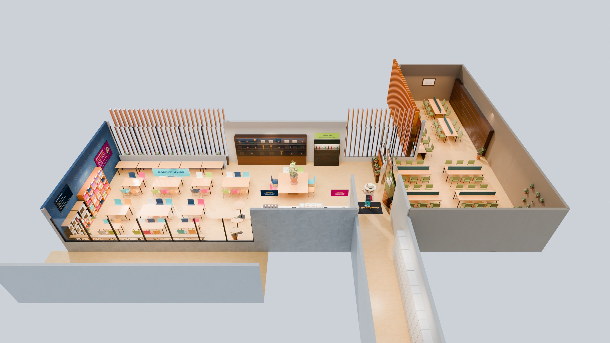
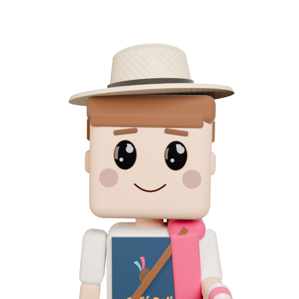
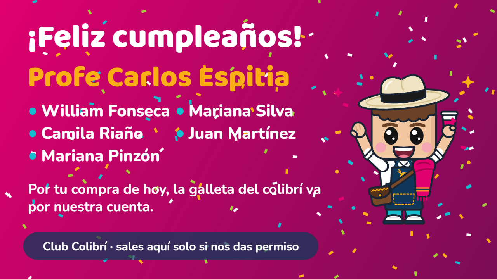
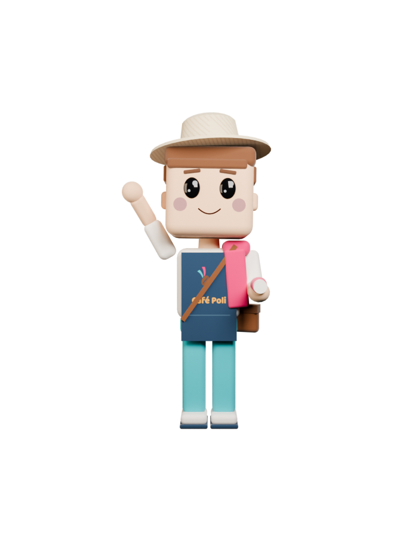

Recorrido 360° · City Campus
Segundo piso del Politécnico Grancolombiano
Preparando el café…
Arrastra para mirar alrededor. Con voz en español si tu navegador la tiene. Funciona en computador y celular.

Segundo piso del Politécnico Grancolombiano
Preparando el café…
Arrastra para mirar alrededor. Con voz en español si tu navegador la tiene. Funciona en computador y celular.


Toca un punto para ir allí. La parte rosada muestra hacia dónde miras.


¿Seguimos donde ibas?